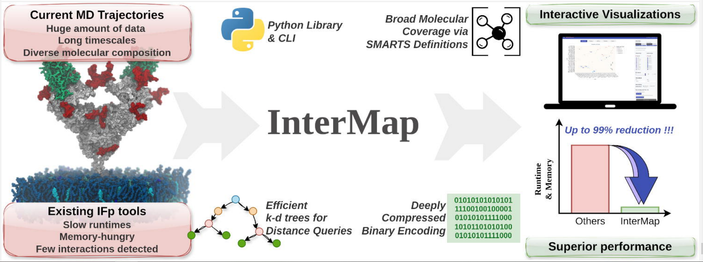
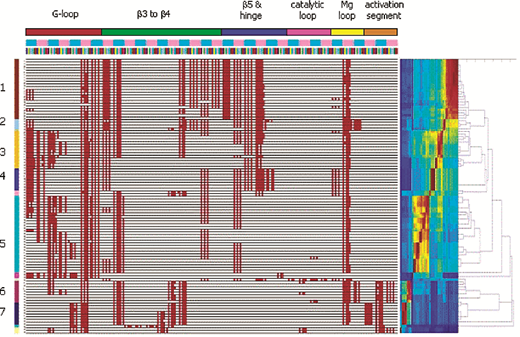
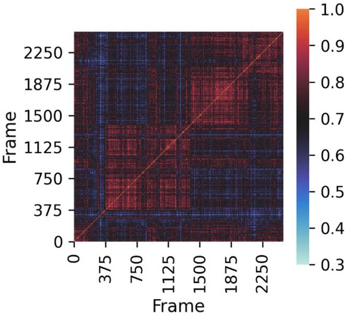
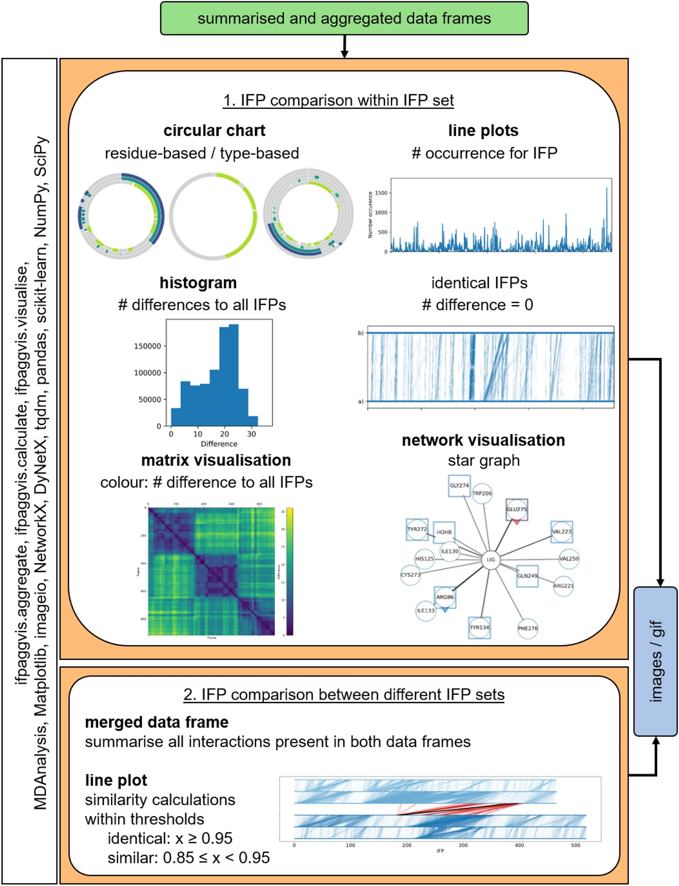
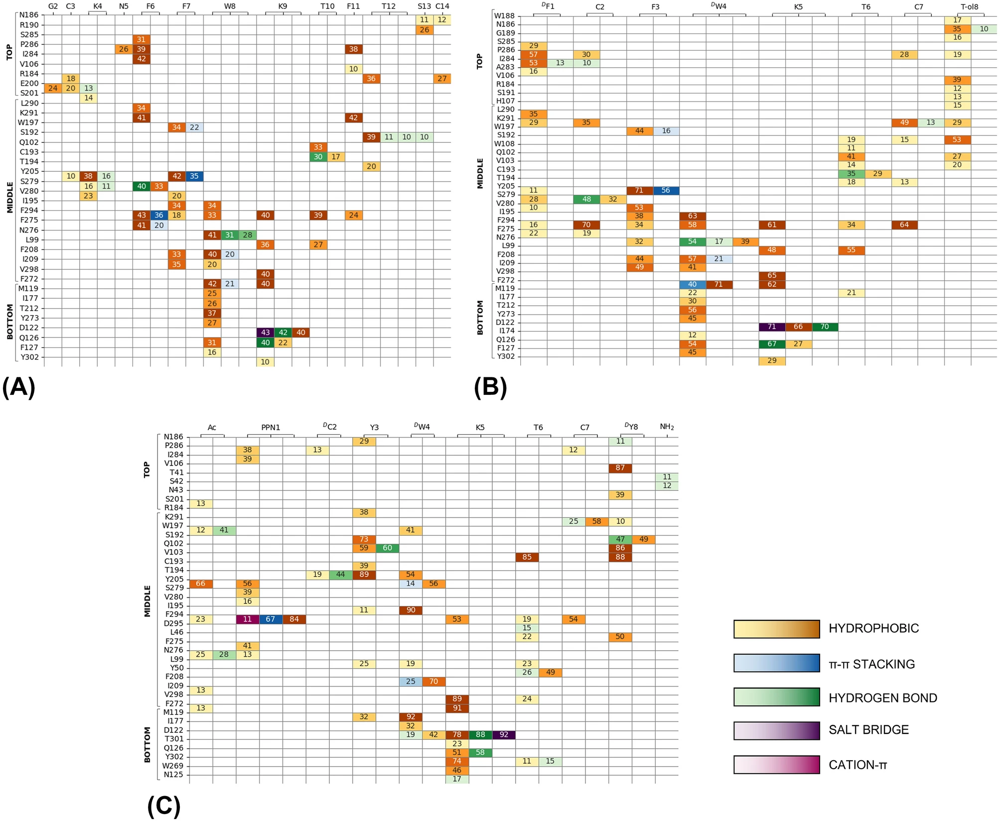
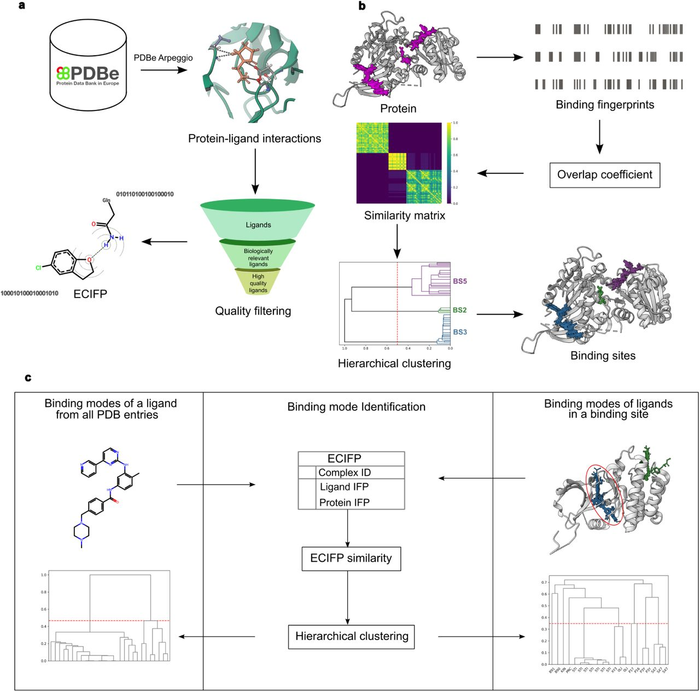

第一个场景：两个配体被对接到同一个结合口袋，评分函数给出的分数相差无几，如何判断谁更接近真实的结合方式？第二个场景：一群活性化合物在结构上差异很大，依据什么判断它们的结合模式是否相似？第三个场景：面对几十条分子动力学（MD）模拟轨迹，怎样找出在模拟全程中持续存在的氢键？
三个场景指向同一个问题：分子是怎样结合的。这类信息体量庞大，仅靠人眼阅读和表格统计难以处理，需要一个能够被计算机比较、检索和学习的表示形式。
这个形式就是本文要讨论的对象：相互作用指纹（Interaction Fingerprint，IFP）。简而言之，IFP 把"某种相互作用在某个位置是否存在"编码为 0/1 位向量：向量的每一位对应一个残基对或原子对，取值由原子类型和几何判据（距离、角度）决定[1]。
本文按时间顺序梳理 IFP 的发展脉络，重点讲述五个阶段：分子指纹的思想前史、SIFt 确立范式、工具的丰富与普及、向 MD 轨迹的扩展，以及在大规模体系上的加速；最后给出当下工具生态的概览和三点展望。
"指纹"一词在化学信息学中的出现远早于 IFP。将分子结构编码为位向量用于相似性搜索，是基于配体的虚拟筛选（ligand-based virtual screening，LBVS）长期采用的技术：例如基于预定义子结构字典的 MACCS 键，以及圆形指纹（其思想可追溯至 1965 年的 Morgan 算法，现代形态以扩展连接指纹 ECFP 为代表[2]），它们按配体自身的子结构特征置位。2022 年的一篇综述将常见分子指纹归纳为八类——基于字典的、圆形的、拓扑的、药效团的、蛋白-配体相互作用型的、基于形状的、增强型的与组合型的——其中"蛋白-配体相互作用指纹"仅占一类[3]。
追问这些指纹的局限，可以发现它们缺少一个维度：结合涉及相互作用双方。同一配体可以采取不同的对接构象；结构相似的配体，结合模式也可能截然不同。而当时公认的瓶颈在于评分函数不够准确——2010 年的一篇论文在引言中直接指出，对接软件提供的评分函数仍是虚拟筛选流程中的主要限制因素[4]。
在 SIFt 之前，"把相互作用表示出来"已有若干线索。LIGPLOT 于 1995 年将蛋白-配体相互作用绘制为二维示意图，为相互作用的可视化提供了先例[5]。Willett 等于 1998 年系统论述了分子相似性与指纹方法，把指纹方法本身建立为一套方法论[6]——这篇论文后来被 SIFt 引用。GRID 以探针分子在蛋白质表面计算相互作用场，标出能量有利的结合位点[7]，是相互作用计算方法的早期代表。
另有一支容易被混淆的平行方向：药效团指纹。PharmPrint 于 1999 年以三点药效团为基集，将配体编码为指纹，用于定量构效关系（quantitative structure-activity relationship，QSAR）建模与聚焦文库设计[8]。它编码的是配体自身的药效特征，与受体无关，因此是与 IFP 平行的另一条路线，并不属于 IFP 的直接前身。2003 年的 Relibase 则走"相互作用数据库"的路线，把蛋白-配体相互作用组织为可查询的系统[9]，与"指纹"构成两种并行思路。
结构数据的产出速度持续提高，人工解读难以跟上，评分函数又不够可靠，一个明确的缺口由此浮现：需要一种表示形式，直接编码配体与受体的结合方式，能够计算相似度、用于筛选并组织海量的结构。这个缺口在 2004 年由 SIFt 补上。
2004 年，Deng、Chuaqui 与 Singh 三位研究者在 Journal of Medicinal Chemistry 发表 SIFt（Structural Interaction Fingerprint，结构相互作用指纹），DOI 10.1021/jm030331x，卷期 47(2):337-344[1]。三位作者均任职于 Biogen 公司的结构信息学部（Department of Structural Informatics，Cambridge, Massachusetts）。这篇论文在 Crossref 与 PubMed 两个口径下的被引次数分别为 546 与 733。
SIFt 的做法可以概括为三步：固定结合口袋的残基集合，为每个残基位点编码"是否存在某类相互作用"（氢键、疏水作用、静电作用等类型）；将三维结构转化为一维二进制位向量；在向量之间计算相似度，得到可比较的结合模式相似性。
为什么采用二进制表示？有三层考虑：存储最省；位向量之间可直接套用 Tanimoto 系数等相似度度量；同时足以支撑"结合模式相似"这一目标。编码可以更精细，只是当时没有必要；这一简洁优先的取向，在后续二十余年的发展中反复出现。
论文给出了三大应用[1]：其一是对接构象的排序与聚类，用结合模式相似度辅助区分正确的对接结果；其二是对约 90 个激酶-抑制剂 X 射线结构进行整理，从结合模式中观察家族内外的异同；其三是作为虚拟筛选的"结合模式过滤器"，剔除不符合目标结合模式的化合物。这三类应用至今仍是 IFP 常见的场景，图 1 给出了第二类应用的结果示例。

图 1 SIFt 的结构相互作用谱：每一行对应一个蛋白-配体复合物，每一列对应口袋残基位点上的一类相互作用，红色位表示存在该相互作用，顶部色条标注所属结构区段，右侧为聚类结果（引自文献[1]）
需要说明，SIFt 是"最早系统提出并得到广泛采用"的开山之作，但并非孤例：同样在 2004 年，Kelly 与 Mancera 在 Journal of Chemical Information and Computer Sciences 上独立提出了扩展相互作用指纹（Expanded Interaction Fingerprint），在 SIFt 基础上加入氢键强度、可及性与几何排布信息，用于 220 个蛋白质的对接后处理[10]。这篇论文有时被误记为 2005 年发表，实际出版于 2004 年。
从引用关系看，SIFt 之后的主要工作大多直接引用了它：2004 年的扩展相互作用指纹[10]、2007 年的分子相互作用指纹[15]、2010 年的药效团型 IFP[12]，以及 2021 年的 ProLIF[33]，都能在引文索引中查到指向 SIFt 的引用关系。
同期还出现过"保守相互作用谱"（profile-SIFt，p-SIFt）的概念，将一组配体共享的相互作用模式总结为一份谱。这一概念没有独立的同名论文，其系统论述见于 Singh 等 2006 年的综述[11]；将其实现为具体方法的，是 2010 年将药效团特征与 IFP 结合、并引入机器学习筛选的药效团型 IFP（Pharm-IF）[12]。
SIFt 还申请了专利（WO2005008240A2）[13]，并被商业软件采用：Schrödinger 的 Maestro/Canvas 内置了"Interaction Fingerprints（SIFt）"功能，官方支持文档可以查证[14]。一项方法能同时获得专利并进入商业产品，通常说明它解决的是实际需求。
"三维结构 → 一维位向量 → 相似度比较"这一范式就此确立，此后二十年一直被沿用，今天的主流工具大多可以追溯到 SIFt。
范式确立之后，后续发展围绕一个根本权衡展开：信息量与简洁性。编码更多信息，表达能力更强，但计算与存储代价更高；保持简洁，则更便于比较与处理。IFP 各类方法过去十余年的分化，大多是在这两种取向之间做选择；而决定一项工具能否普及的，还有一个常被忽视的维度——使用门槛。
2007 年，Marcou 与 Rognan 提出分子相互作用指纹（Molecular Interaction Fingerprints，MIFs），覆盖 11 类相互作用，用于片段与骨架对接的优化[15]。这篇论文是 IFP 方法类后续工作中被引次数最高的工作之一（Crossref 口径 383 次），2010 年的药效团型 IFP 直接引用了它[12]。
同一时期，向"信息量"一侧扩展的工作不断出现：
这些工作的共同点，是在"相互作用是否存在"之外，编码更多的化学与几何信息。
真正影响普及的，是使用门槛。2013 年，PyPLIF 将 IFP 实现为开源 Python 工具[21]，对接后处理中的 IFP 分析无需额外配置即可使用。扩大了使用面的，是 2015 年的 PLIP（Protein-Ligand Interaction Profiler）[22]：以网页服务器加开源代码的形式提供，自动检测并可视化蛋白-配体相互作用，覆盖的相互作用类型齐全。在本文涉及的 IFP 工具中，PLIP 的引用量（Crossref 口径 2199 次）最高。
PLIP 的价值很快得到应用层面的验证：2017 年，研究团队利用 PLIP 计算出的相互作用模式开展药物重定位研究，提示抗疟药阿莫地喹可能存在新的适应症[23]；2021 年，PLIP 扩展至 DNA/RNA 配体，此时官方统计的服务查询量已超过一百万次[24]；2025 年，PLIP 进一步纳入蛋白-蛋白相互作用[25]。
PLIP 普及程度较高的一个关键因素，是网页化部署：无需安装软件，上传结构即可查看相互作用图。当几种方法在功能上差异不大时，使用门槛往往直接影响采用范围。
同一时期，IFP 的应用面不断拓宽：AuPosSOM（2010）以自组织映射（SOM）对接触特征聚类对接构象[4]；IChem（2018）将相互作用同时编码为指纹与图[26]；FPKit（2018）系统评估了 IFP 的相似性度量，讨论了 Tanimoto 系数之外的选择[27]；IFPTarget（2017）将 IFP 用于靶标识别[28]；GPCR-IFP（2022）面向 G 蛋白偶联受体聚合实验结构[29]；LiBiSCo（2021）在 PDB 层面比较配体-残基相互作用[30]。这些工作把 IFP 的应用场景不断拓宽，在方法上仍同源。
商业软件方面，Cresset 公司的 Flare/Forge 将 PLIF（Protein-Ligand Interaction Fingerprints）产品化，其方法上可正式引用的论文是 2007 年发表的 FLAP（Fingerprints for Ligands and Proteins），基于 GRID 分子相互作用场构建四点指纹[31]。Schrödinger 的 SIFt 功能见官方支持文档[14]；MOE 的 PLIF 见于软件手册与大量应用文献。后两者均未见独立的方法学论文，此处仅介绍工具本身。
在这一阶段，与 IFP 竞争的方法还有药效团指纹（PharmPrint[8]、FLAP[31] 一侧）与纯评分函数。IFP 的优势在于支持聚类、筛选与结构组织——评分函数难以表达的"结合方式是否相似"，IFP 可以回答。代价也随之而来：各工具的相互作用类型定义、截断距离与口袋定义各不相同，普遍存在定义口径不统一的问题。这一问题的后果，在后续规模化阶段表现得更加突出。
静态结构（晶体、对接结果）中的 IFP 反映的是一个时间点的状态。MD 模拟普及之后，相互作用成为会变化的过程：氢键出现、消失、再次出现；有的接触很稳定，有的仅是瞬时路过。要刻画这种动态，IFP 需要从描述单一状态扩展为描述整个轨迹——模拟中的每一帧都生成一张指纹，问题也随之从"如何编码"变为"如何处理海量编码"[32]。
2021 年，Bouysset 与 Fiorucci 发布 ProLIF[33]：一个 Python 库，可从 MD 轨迹、实验结构或对接模拟中生成 IFP，支持蛋白质、配体、DNA、RNA 的任意组合，相互作用类型可重新参数化或由用户自定义。ProLIF 选择融入 Python 与 MDAnalysis 生态——这是 MD 分析领域的事实标准，使"计算 IFP"从独立的分析流程变成分析链条上的一个环节。该论文在 Journal of Cheminformatics 上被引 462 次以上。图 2 为轨迹内逐帧指纹比较的一个示例。

图 2 MD 轨迹逐帧指纹的相似度矩阵：横纵轴均为轨迹帧编号，颜色表示两帧指纹的相似程度，对角线为帧与自身的比较（引自文献[33]）
MD 时代同期还有若干工具：getContacts 专注于静态与动态结构中的原子接触网络比较，配套 Contact Comparison Atlas，面向 GPCR 等家族的结构比较[34]；MD-IFP 起源于随机加速分子动力学（RAMD）的配体解离工作流[35]，最初回答"配体如何离开口袋"的动力学机制问题，后扩展至蛋白-蛋白解离分析[36]；MD-LR（2023）面向 MD 轨迹的配体-受体相互作用分析，针对高性能计算做了优化[37]；StreaMD（2024）则将 IFP 生成集成进高通量 MD 流水线[38]。
一帧一张指纹，一条轨迹就产生成千上万条位向量，聚合与可视化成为新的方法缺口。Jaeger-Honz 等于 2024 年在 Journal of Cheminformatics 给出系统方案：对 MD-IFP 进行时间聚合、可视化与跨模拟比较，把相互作用随时间的出现、消失与持续性呈现为可读的图表[32]。该工作把"海量 MD 数据中的 IFP 如何分析"作为一个明确的方法学问题提出，并给出了可复用的实现，其组成如图 3 所示。

图 3 MD-IFP 的聚合与可视化方案（IFPAggVis）：左侧列出模块组成与依赖，主体分为"集合内比较"与"不同集合间比较"两类，输出环形图、折线图、直方图、矩阵图与网络图（引自文献[32]）
MD-IFP 的价值有具体案例支撑。2023 年一项针对生长抑素受体 SSTR2 的研究，用 IFP 分析微秒级多副本模拟，发现激动剂与拮抗剂在口袋外缘的相互作用模式存在显著差异[39]。这类区分结合模式的结论，在单一静态结构中难以获得，图 4 给出了其中一例。

图 4 SSTR2 中配体与受体的相互作用指纹：纵轴为受体残基，横轴为结构区段，色块表示相互作用类型，格内数字为该相互作用的统计值，A–C 对应三种模拟体系（引自文献[39]）
回看 MD 时代的几条路线：ProLIF 融入 Python 生态，成为轨迹分析中的常用选择；getContacts 依赖 VMD 及其命名约定；MD-LR 面向 GROMACS 生态（后两项限制引自 InterMap 论文的竞品对比[40]）。工具对特定运行环境的依赖，在规模化阶段成为重要的制约因素。
MD 轨迹的时间尺度已达毫秒级，测试体系中出现了核小体规模的复合物与 10 万帧量级的轨迹，PDB 的结构总数也已超过 18 万[40][41]。IFP 检测的主要开销来自海量原子间的距离计算，分子内 IFP 尤其昂贵[40]。在这个规模下，现有工具的计算负担显著增加：ProLIF 在大体系上负担明显，getContacts 受 VMD 与命名约定限制，MD-LR 仅支持特定轨迹格式——这三项限制均出自 InterMap 论文的竞品对比[40]。
InterMap 于 2025 年以预印本形式发布，2026 年正式发表于 Journal of Chemical Theory and Computation[40]，其加速策略可概括为三点：用 k-d 树将距离查询从朴素的 O(N²) 降低到平均 O(log N)；用 Numba JIT 将关键循环编译为机器码并行执行；用位数组存储指纹，将内存占用降至逐字节存储的八分之一。在 9 条真实 MD 轨迹上，InterMap 实现了最高 99% 的运行时与峰值内存削减。它还支持用 SMARTS 模式定义相互作用类型，摆脱对残基/原子命名约定的依赖[40]。图 5 汇总了该方法与已有工具在 9 条轨迹上的对比结果。
图 5 InterMap 与已有工具在 9 条真实 MD 轨迹上的性能对比：残基级与原子级分别列出运行时间、内存占用与检出的相互作用数；斜体为超出 24 h 或 64 GB 限制而失败的任务，N/R 表示运行出错、无结果（引自文献[40]）
需要说明，InterMap 的定位是"超大规模轨迹上的 IFP 检测"这一特定场景，与 ProLIF 这类通用工具属于互补关系。
另一条路线是让表示更简洁。2026 年的 ECIFP 预印本[41]将 3D 蛋白-配体接触简化为指纹，支撑对 PDB 全库的大规模比较：18 万条结构、9000 余个配体的结合模式、48000 余个结合位点[41]。该工作目前为预印本，具体数字以正式发表版本为准。图 6 概括了 ECIFP 的构建与使用流程。

图 6 ECIFP 的构建与使用流程：(a) 从 PDB 复合物计算相互作用并编码为指纹，比较配体指纹得相似性矩阵；(b) 对蛋白-配体相互作用同样编码与聚类；(c) 两类应用场景——同一配体在全部 PDB 条目中的结合模式、同一结合位点中不同配体的结合模式（引自文献[41]）
还有一支新方向正在突破二值表示：GRADE/X-GRADE（2025）基于 GRAIL 评分生成连续值的 IFP 描述子，用于可视化、亲和力预测与 3D-QSAR[42]。这显示 IFP 方法体系在信息量与简洁性的权衡上，又开始向信息量一侧倾斜。
同一目标存在两条路线：InterMap 侧重算法加速，把计算变快；ECIFP/GRADE 侧重表示改进，把表示变简洁或变连续。"快"与"可比较"可以分开实现，也可以同时优化。
把时间轴停在当下，工具格局大致如下：
| 工具 | 数据来源 | 适用范围 | 定位 |
|---|---|---|---|
| PLIP | 静态结构 | 配体 / DNA / RNA / 蛋白-蛋白 | 网页端集成工具，2021 年时服务已超百万查询[24] |
| ProLIF | MD + 静态 | 任意分子组合 | Python 生态中的常用选择[33] |
| getContacts | 静态 + 动态 | 原子接触网络 | 依赖 VMD，面向结构比较[34] |
| MD-IFP / MD-LR | MD 轨迹 | 配体-蛋白 / 蛋白-蛋白 | 轨迹专用（前者源自 RAMD 工作流，后者面向高性能计算）[35][37] |
| InterMap | MD 轨迹 | 含分子内 | 面向大规模体系，性能优势明显[40] |
| ECIFP | PDB 全库 | 结合模式挖掘 | 支持 PDB 全库检索（预印本）[41] |
| 商业（FLAP / Schrödinger SIFt / MOE PLIF） | 静态 | 配体结合 | 产品化工具（FLAP 有正式论文）[31][14] |
总体来看，可选工具众多，但标准较为分散。一个突出的问题是各工具的定义口径不统一：相互作用类型、截断距离、口袋定义各不相同，导致不同工具给出的检出结果与指纹数据难以直接比较。2022 年的综述也将缺乏标准化流程列为分子指纹应用的主要挑战之一[3]。
工具选择可以归结为三个问题：数据来自静态结构还是 MD 轨迹；是否需要处理蛋白-蛋白、核酸或分子内相互作用；数据规模有多大。静态小体系可用 PLIP；MD 轨迹分析可考虑 Python 生态的 ProLIF；大规模体系与分子内 IFP 分析可以关注 InterMap；PDB 全库层面的比较，可等待 ECIFP 的正式版本。
PLIP 选择网页化，在 IFP 工具中获得最高的引用量[22]；ProLIF 融入 Python 生态，成为 MD 分析中的常用选项[33]；InterMap 选择面向性能，打开了分子内 IFP 的应用空间[40]。这些选择在当时并非唯一选项，事后却成为路线分岔点。工具生态的现状，很大程度上是这些历史选择逐层沉淀的结果。
从二值的 SIFt，到增加信息的扩展 IFP、APIF、PLEC、ECIF，再到 InterMap 的位压缩与 GRADE 的连续值表示，IFP 各类方法的发展始终在"信息量"与"简洁性"之间移动。
这一主线之外，IFP 还有另一个角色：机器学习模型的输入特征。2010 年的 RF-Score 是较早且被广泛引用的机器学习评分函数之一，其输入特征为原子对计数；2021 年的一篇综述按组成单元对 IFP 分类时，将这类特征归为原子对计数型 IFP[43][44]。自此，IFP 同时承担分析工具与机器学习特征两种角色，此后的 PLEC、ECIF 都属于这条脉络[18][19]。
回到根本：二值位向量舍弃了相互作用的强度、方向与动力学细节，换来的是可比较、可检索、可学习。这一取舍是 IFP 的方法论前提，也划定了它的适用范围——需要细节时，可以转向连续表示；需要规模时，二值表示仍然高效。
展望一（最可能的情形）：IFP 与深度学习共存，作为监督信号、可解释层与小样本条件下的先验。旁证是 2023 年发表于 Nature 的 MaSIF：用几何深度学习生成蛋白质表面的特征描述子，并据此从头设计蛋白结合物[45]。需要说明，MaSIF 的"表面指纹"是表面几何化学特征描述子，与 IFP 的相互作用位向量是两个概念，此处仅作为"特征化并用于学习"这一趋势的旁证，不宜理解为 IFP 的直接延续。
展望二（较为乐观）：IFP 走向标准化，定义口径统一，成为连接模型与人类理解的接口——模型负责计算，IFP 负责解释。
展望三（需要警惕）：碎片化持续下去，缺乏统一标准，各研究组重复实现相似工具，或 IFP 被端到端模型整体替代。
[1] Deng Z, Chuaqui C, Singh J. Structural Interaction Fingerprint (SIFt): A Novel Method for Analyzing Three-Dimensional Protein−Ligand Binding Interactions. Journal of Medicinal Chemistry, 2004, 47(2): 337-344. DOI: 10.1021/jm030331x.
[2] Rogers D, Hahn M. Extended-Connectivity Fingerprints. Journal of Chemical Information and Modeling, 2010, 50(5): 742-754. DOI: 10.1021/ci100050t.
[3] Yang J, Cai Y, Zhao K, et al. Concepts and applications of chemical fingerprint for hit and lead screening. Drug Discovery Today, 2022, 27(11): 103356. DOI: 10.1016/j.drudis.2022.103356.
[4] Bouvier G, Evrard-Todeschi N, Girault J P, et al. Automatic clustering of docking poses in virtual screening process using self-organizing map. Bioinformatics, 2010, 26(1): 53-60. DOI: 10.1093/bioinformatics/btp623.
[5] Wallace A C, Laskowski R A, Thornton J M. LIGPLOT: a program to generate schematic diagrams of protein-ligand interactions. Protein Engineering, 1995, 8(2): 127-134. DOI: 10.1093/protein/8.2.127.
[6] Willett P, Barnard J M, Downs G M. Chemical Similarity Searching. Journal of Chemical Information and Computer Sciences, 1998, 38(6): 983-996. DOI: 10.1021/ci9800211.
[7] Goodford P J. A computational procedure for determining energetically favorable binding sites on biologically important macromolecules. Journal of Medicinal Chemistry, 1985, 28(7): 849-857. DOI: 10.1021/jm00145a002.
[8] McGregor M J, Muskal S M. Pharmacophore Fingerprinting. 1. Application to QSAR and Focused Library Design. Journal of Chemical Information and Computer Sciences, 1999, 39(3): 569-574. DOI: 10.1021/ci980159j.
[9] Hendlich M, Bergner A, Günther J, et al. Relibase: design and development of a database for comprehensive analysis of protein-ligand interactions. Journal of Molecular Biology, 2003, 326(2): 607-620. DOI: 10.1016/S0022-2836(02)01408-0.
[10] Kelly M D, Mancera R L. Expanded Interaction Fingerprint Method for Analyzing Ligand Binding Modes in Docking and Structure-Based Drug Design. Journal of Chemical Information and Computer Sciences, 2004, 44(6): 1942-1951. DOI: 10.1021/ci049870g.
[11] Singh J, Deng Z, Narale G, et al. Structural Interaction Fingerprints: A New Approach to Organizing, Mining, Analyzing, and Designing Protein–Small Molecule Complexes. Chemical Biology & Drug Design, 2006, 67(1): 5-12. DOI: 10.1111/j.1747-0285.2005.00323.x.
[12] Sato T, Honma T, Yokoyama S. Combining Machine Learning and Pharmacophore-Based Interaction Fingerprint for in Silico Screening. Journal of Chemical Information and Modeling, 2010, 50(1): 170-185. DOI: 10.1021/ci900382e.
[13] Structural Interaction Fingerprint (SIFt). WO2005008240A2. Google Patents. https://patents.google.com/patent/WO2005008240A2.
[14] Structural Interaction Fingerprints (SIFt) Overview and Applications. Schrödinger Support. https://my.schrodinger.com/support/article/1943.
[15] Marcou G, Rognan D. Optimizing Fragment and Scaffold Docking by Use of Molecular Interaction Fingerprints. Journal of Chemical Information and Modeling, 2007, 47(1): 195-207. DOI: 10.1021/ci600342e.
[16] Pérez-Nueno V I, Rabal O, Borrell J I, et al. APIF: a new interaction fingerprint based on atom pairs and its application to virtual screening. Journal of Chemical Information and Modeling, 2009, 49(5): 1245-1260. DOI: 10.1021/ci900043r.
[17] Da C, Kireev D. Structural Protein-Ligand Interaction Fingerprints (SPLIF) for Structure-Based Virtual Screening: Method and Benchmark Study. Journal of Chemical Information and Modeling, 2014, 54(9): 2555-2561. DOI: 10.1021/ci500319f.
[18] Wójcikowski M, Kukiełka M, Stepniewska-Dziubińska M M, et al. Development of a protein-ligand extended connectivity (PLEC) fingerprint and its application for binding affinity predictions. Bioinformatics, 2019, 35(8): 1334-1341. DOI: 10.1093/bioinformatics/bty757.
[19] Sánchez-Cruz N, Medina-Franco J L, Mestres J, et al. Extended connectivity interaction features: improving binding affinity prediction through chemical description. Bioinformatics, 2021, 37(10): 1376-1382. DOI: 10.1093/bioinformatics/btaa982.
[20] Jasper J B, Humbeck L, Brinkjost T, et al. A novel interaction fingerprint derived from per atom score contributions: exhaustive evaluation of interaction fingerprint performance in docking based virtual screening. Journal of Cheminformatics, 2018, 10: 15. DOI: 10.1186/s13321-018-0264-0.
[21] Radifar M, Yuniarti N, Istyastono E P. PyPLIF: Python-based protein-ligand interaction fingerprinting. Bioinformation, 2013, 9(6): 325-328. DOI: 10.6026/97320630009325.
[22] Salentin S, Schreiber S, Haupt V J, et al. PLIP: fully automated protein–ligand interaction profiler. Nucleic Acids Research, 2015, 43(W1): W443-W447. DOI: 10.1093/nar/gkv315.
[23] Salentin S, Adasme M F, Falschlunger S, et al. From malaria to cancer: Computational drug repositioning of amodiaquine using PLIP interaction patterns. Scientific Reports, 2017, 7: 11924. DOI: 10.1038/s41598-017-11924-4.
[24] Adasme M F, Linnemann K L, Bolz S N, et al. PLIP 2021: expanding the scope of the protein–ligand interaction profiler to DNA and RNA. Nucleic Acids Research, 2021, 49(W1): W530-W534. DOI: 10.1093/nar/gkab294.
[25] Schake P, Bolz S N, Linnemann K, et al. PLIP 2025: introducing protein–protein interactions to the protein–ligand interaction profiler. Nucleic Acids Research, 2025, 53(W1): W463-W465. DOI: 10.1093/nar/gkaf361.
[26] Da Silva F, Desaphy J, Rognan D. IChem: a versatile toolkit for detecting, comparing, and predicting protein-ligand interactions. ChemMedChem, 2018, 13(6): 507-510. DOI: 10.1002/cmdc.201700505.
[27] Rácz A, Bajusz D, Héberger K. Life beyond the Tanimoto coefficient: similarity measures for interaction fingerprints. Journal of Cheminformatics, 2018, 10: 36. DOI: 10.1186/s13321-018-0302-y.
[28] Li G B, Yu Z J, Liu S, et al. IFPTarget: a customized virtual target identification method based on protein-ligand interaction fingerprinting analyses. Journal of Chemical Information and Modeling, 2017, 57(7): 1640-1651. DOI: 10.1021/acs.jcim.7b00225.
[29] Xu M, Li Y, Dong J, et al. GPCR-IFP: A Web Server for Analyzing G-Protein Coupled Receptor-Ligand Fingerprint Interaction from Experimental Structures. bioRxiv, 2022. DOI: 10.1101/2022.03.16.484667.
[30] Hassan S, Töpel M, Aronsson H. Ligand Binding Site Comparison (LiBiSCo)—a web-based tool for analyzing interactions between proteins and ligands to explore amino acid specificity within active sites. Proteins: Structure, Function, and Bioinformatics, 2021, 89(11): 1530-1540. DOI: 10.1002/prot.26175.
[31] Baroni M, Cruciani G, Sciabola S, et al. A common reference framework for analyzing/comparing proteins and ligands. Fingerprints for Ligands and Proteins (FLAP): theory and application. Journal of Chemical Information and Modeling, 2007, 47(2): 279-294. DOI: 10.1021/ci600253e.
[32] Jaeger-Honz S, Klein K, Schreiber F. Systematic analysis, aggregation and visualisation of interaction fingerprints for molecular dynamics simulation data. Journal of Cheminformatics, 2024, 16: 28. DOI: 10.1186/s13321-024-00822-3.
[33] Bouysset C, Fiorucci S. ProLIF: a library to encode molecular interactions as fingerprints. Journal of Cheminformatics, 2021, 13: 125. DOI: 10.1186/s13321-021-00548-6.
[34] Venkatakrishnan A J, Fonseca R, Ma A K, et al. Uncovering patterns of atomic interactions in static and dynamic structures of proteins. bioRxiv, 2019. DOI: 10.1101/840694.
[35] Kokh D B, Doser B, Richter S, et al. A workflow for exploring ligand dissociation from a macromolecule: efficient random acceleration molecular dynamics simulation and interaction fingerprints analysis of ligand trajectories. The Journal of Chemical Physics, 2020, 153: 125102. DOI: 10.1063/5.0019088.
[36] D'Arrigo G, Kokh D B, Nunes-Alves A, et al. Computational screening of the effects of mutations on protein-protein off-rates and dissociation mechanisms by τRAMD. Communications Biology, 2024, 7(1). DOI: 10.1038/s42003-024-06880-5.
[37] Pieroni M, Madeddu F, Di Martino J, et al. MD–Ligand–Receptor: A High-Performance Computing Tool for Characterizing Ligand–Receptor Binding Interactions in Molecular Dynamics Trajectories. International Journal of Molecular Sciences, 2023, 24(14): 11671. DOI: 10.3390/ijms241411671.
[38] Ivanova A, Mokshyna O, Polishchuk P. StreaMD: the toolkit for high-throughput molecular dynamics simulations. Journal of Cheminformatics, 2024, 16: 123. DOI: 10.1186/s13321-024-00918-w.
[39] Gervasoni S, Guccione C, Fanti V, et al. Molecular simulations of SSTR2 dynamics and interaction with ligands. Scientific Reports, 2023, 13(1). DOI: 10.1038/s41598-023-31823-1.
[40] Fajardo-Díaz E, Bignon E, Dehez F, et al. InterMap: Accelerated Detection of Interaction Fingerprints on Large-Scale Molecular Ensembles. Journal of Chemical Theory and Computation, 2026, 22(14): 7370-7381. DOI: 10.1021/acs.jctc.6c00083.
[41] Kunnakkattu I R, Choudhary P, Midlik A, et al. Large-scale analysis of ligand binding mode similarities in the PDB using interaction fingerprints. bioRxiv, 2026. DOI: 10.64898/2026.04.17.719144.
[42] Fellinger C, Seidel T, Merget B, et al. GRADE and X-GRADE: Unveiling Novel Protein–Ligand Interaction Fingerprints Based on GRAIL Scores. Journal of Chemical Information and Modeling, 2025, 65(5): 2456-2475. DOI: 10.1021/acs.jcim.4c01902.
[43] Ballester P J, Mitchell J B O. A machine learning approach to predicting protein-ligand binding affinity with applications to molecular docking. Bioinformatics, 2010, 26(9): 1169-1175. DOI: 10.1093/bioinformatics/btq112.
[44] Wang D D, Chan M T, Yan H. Structure-based protein–ligand interaction fingerprints for binding affinity prediction. Computational and Structural Biotechnology Journal, 2021, 19: 6291-6300. DOI: 10.1016/j.csbj.2021.11.018.
[45] Gainza P, Wehrle S, Van Hall-Beauvais A, et al. De novo design of protein interactions with learned surface fingerprints. Nature, 2023, 617(7959): 176-184. DOI: 10.1038/s41586-023-05993-x.
SIFt也才几百次引用，看来这个方向其实并不是特别火热的一个方向，或者说IFP可能只能成为某些故事的中间步骤，其本身或许并不能作为特别出彩的一部分，AI的发展也不一定就会导致IFP发展更好，所有的相互作用信息都是被隐式编码在原子的坐标中的，IFP只不过把这个过程显性化了。
祝好~